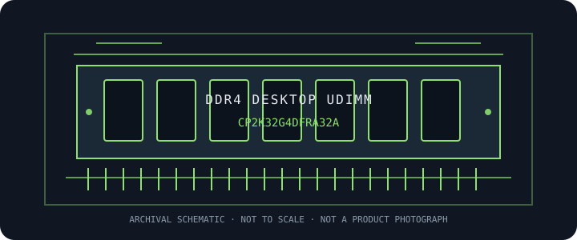

[ MANUFACTURER MODEL // MEMORY / RAM ]
Crucial Pro CP2K32G4DFRA32A
Crucial Pro DDR4 desktop kit; 32 GB (2 × 16 GB) at DDR4-3200 CL22. This model-specific archive entry identifies the manufacturer SKU; confirm the exact suffix and revision before use.

EXACT ID: Crucial Pro CP2K32G4DFRA32A. Verify the complete label, revision, and SPD before compatibility decisions; retail families can include electrically different variants.
Model specifications
| Manufacturer / part ID | Crucial Pro CP2K32G4DFRA32A |
|---|---|
| Class / form factor | DDR4 desktop 288-pin UDIMM; unbuffered, non-ECC; matched dual-module package. |
| Capacity / package | 32 GB kit (2 × 16 GB) |
| Data rate / bandwidth class | 3200 MT/s (PC4-25600) |
| Primary timings | CL22-22-22 at rated JEDEC operation. Confirm SPD tables and revision-specific secondary timings from the exact module or kit label. |
| Voltage / profile | 1.20 V; JEDEC-rated operation; verify motherboard support, maximum capacity, rank/density, and DIMM population. |
| ECC / buffering | Unbuffered, non-ECC at the system interface. DDR5 on-die ECC is internal to DRAM devices and does not provide host-visible system ECC. |
| Compatibility | Desktop DDR4 288-pin UDIMM only. This product is unbuffered and non-ECC at the system interface; DDR5 on-die ECC is not system-level ECC. CPU and motherboard must support the generation, capacity, organization, and requested rate. JEDEC-rated operation; verify motherboard support, maximum capacity, rank/density, and DIMM population. Keep the matched kit together and use the motherboard-recommended paired slots; do not mix kits. |
Compatibility, service & archive notes
- Desktop DDR4 288-pin UDIMM only. This product is unbuffered and non-ECC at the system interface; DDR5 on-die ECC is not system-level ECC. CPU and motherboard must support the generation, capacity, organization, and requested rate. JEDEC-rated operation; verify motherboard support, maximum capacity, rank/density, and DIMM population. Keep the matched kit together and use the motherboard-recommended paired slots; do not mix kits.
- DDR4 and DDR5 DIMMs use different electrical interfaces and keyed sockets despite both having 288 contacts; do not interchange or force modules.
- Rated profile speeds can exceed a processor's official memory specification; system training may select a lower rate depending on CPU, board, firmware, population, and module organization.
- Power down and follow the host service manual. Use ESD precautions, handle the module by its edges, and follow the board's recommended paired-slot order.
Preservation record
Photograph the full product label, preserve a read-only SPD dump, and note the module revision, host slot, CPU, motherboard, firmware, configured rate/timings/voltage, test method, and observed errors.
Manufacturer & standards references
- Crucial Pro — CP2K32G4DFRA32A manufacturer product specificationPrimary product-family or SKU reference; compare the exact part number and revision printed on the sample.
- JEDEC JESD79-4 — DDR4 SDRAMJEDEC generation standard for interface context; it does not qualify this SKU for a particular platform or guarantee an overclocked profile.
For final qualification, consult the exact motherboard and CPU documentation and supported-memory list; label and SPD provide specimen-level evidence.